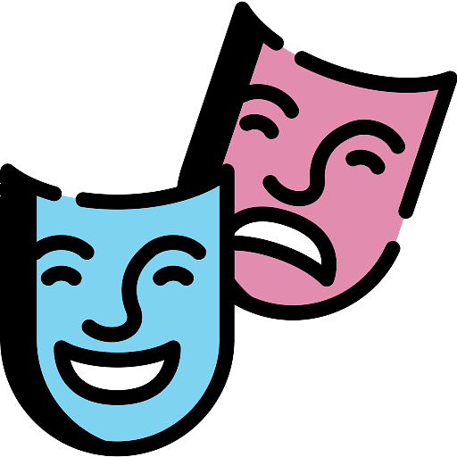
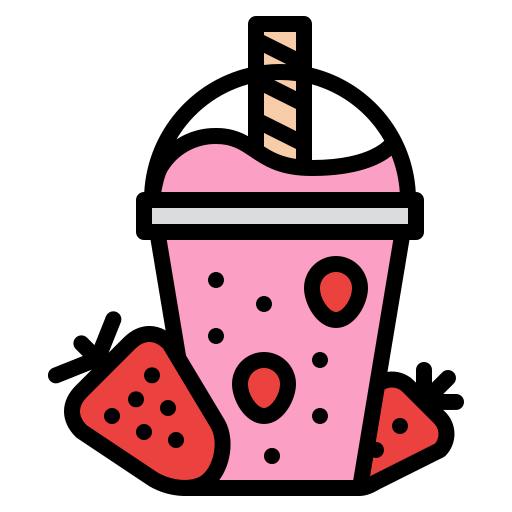

Home
About
Virtual Theatricality
Smoothie Moves
Resume
Contact Me
ARIEL QUINAIN

Using Unity3D, I combined my two passions, coding and theatre, to create a virtual theatre.

A Game Development project, a time management smoothie tender game developed in Unity3D.
Walk through my professional experience in my virtual resume!